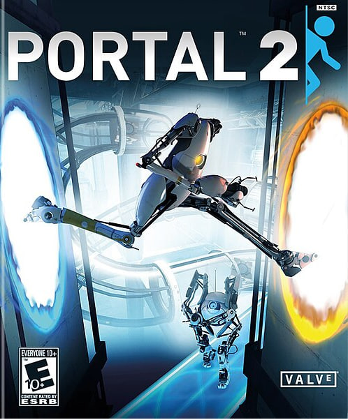

● ИДЕТ ПОДГОТОВКА ФАЙЛОВ (89.1%)
Portal 2
Версия: v2.0.0.1 (Complete Edition)
Продолжение инновационной головоломки от Valve. Вам предстоит снова взять в руки портальную пушку, встретиться с Глэйдос и исследовать заброшенные лаборатории Aperture Science.
Системные требования:
ОЗУ: 2 ГБ | Видеокарта: 256 МБ | Место: 8 ГБ
ПОДГОТОВКА АРХИВА...
Скоро игра будет доступна в облаке!